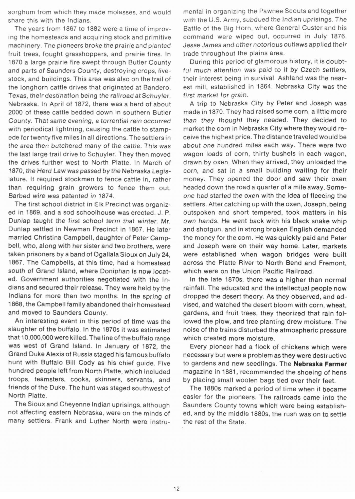

The book · The Kastls: in Pioneer Nebraska
Page 12


Transcription
sorghum from which they made molasses, and would share this with the Indians.
The years from 1867 to 1882 were a time of improving the homesteads and acquiring stock and primitive machinery. The pioneers broke the prairie and planted fruit trees, fought grasshoppers, and prairie fires. In 1870 a large prairie fire swept through Butler County and parts of Saunders County, destroying crops, livestock, and buildings. This area was also on the trail of the longhorn cattle drives that originated at Bandero, Texas, their destination being the railroad at Schuyler, Nebraska. In April of 1872, there was a herd of about 2000 of these cattle bedded down in southern Butler County. That same evening, a torrential rain occurred with periodical lightning, causing the cattle to stampede for twenty five miles in all directions. The settlers in the area then butchered many of the cattle. This was the last large trail drive to Schuyler. They then moved the drives further west to North Platte. In March of 1870, the Herd Law was passed by the Nebraska Legislature. It required stockmen to fence cattle in, rather than requiring grain growers to fence them out. Barbed wire was patented in 1874.
The first school district in Elk Precinct was organized in 1869, and a sod schoolhouse was erected. J. P. Dunlap taught the first school term that winter. Mr. Dunlap settled in Newman Precinct in 1867. He later married Christina Campbell, daughter of Peter Campbell, who, along with her sister and two brothers, were taken prisoners by a band of Ogallala Sioux on July 24, 1867. The Campbells, at this time, had a homestead south of Grand Island, where Doniphan is now located. Government authorities negotiated with the Indians and secured their release. They were held by the Indians for more than two months. In the spring of 1868, the Campbell family abandoned their homestead and moved to Saunders County.
An interesting event in this period of time was the slaughter of the buffalo. In the 1870s it was estimated that 10,000,000 were killed. The line of the buffalo range was west of Grand Island. In January of 1872, the Grand Duke Alexis of Russia staged his famous buffalo hunt with Buffalo Bill Cody as his chief guide. Five hundred people left from North Platte, which included troops, teamsters, cooks, skinners, servants, and friends of the Duke. The hunt was staged southwest of North Platte.
The Sioux and Cheyenne Indian uprisings, although not affecting eastern Nebraska, were on the minds of many settlers. Frank and Luther North were instrumental in organizing the Pawnee Scouts and together with the U.S. Army, subdued the Indian uprisings. The Battle of the Big Horn, where General Custer and his command were wiped out, occurred in July 1876. Jesse James and other notorious outlaws applied their trade throughout the plains area.
During this period of glamorous history, it is doubtful much attention was paid to it by Czech settlers, their interest being in survival. Ashland was the nearest mill, established in 1864. Nebraska City was the first market for grain.
A trip to Nebraska City by Peter and Joseph was made in 1870. They had raised some corn, a little more than they thought they needed. They decided to market the corn in Nebraska City where they would receive the highest price. The distance traveled would be about one hundred miles each way. There were two wagon loads of corn, thirty bushels in each wagon, drawn by oxen. When they arrived, they unloaded the corn, and sat in a small building waiting for their money. They opened the door and saw their oxen headed down the road a quarter of a mile away. Someone had started the oxen with the idea of fleecing the settlers. After catching up with the oxen, Joseph, being outspoken and short tempered, took matters in his own hands. He went back with his black snake whip and shotgun, and in strong broken English demanded the money for the corn. He was quickly paid and Peter and Joseph were on their way home. Later, markets were established when wagon bridges were built across the Platte River to North Bend and Fremont, which were on the Union Pacific Railroad.
In the late 1870s, there was a higher than normal rainfall. The educated and the intellectual people now dropped the desert theory. As they observed, and advised, and watched the desert bloom with corn, wheat, gardens, and fruit trees, they theorized that rain followed the plow, and tree planting drew moisture. The noise of the trains disturbed the atmospheric pressure which created more moisture.
Every pioneer had a flock of chickens which were necessary but were a problem as they were destructive to gardens and new seedlings. The Nebraska Farmer magazine in 1881, recommended the shoeing of hens by placing small woolen bags tied over their feet.
The 1880s marked a period of time when it became easier for the pioneers. The railroads came into the Saunders County towns which were being established, and by the middle 1880s, the rush was on to settle the rest of the State.
Transcriber’s notes
Continues the sentence 'The Kastl family raised a type of' from p.10 (s012), after the map on p.11. Several runs of text are set in a slanted/italic face apparently at random (a typesetting artifact, e.g. 'their destination being the railroad at Schuyler', 'Barbed wire was patented in 1874'); not marked as italics here. 'Nebraska Farmer' is in bold in the print. Print spellings kept: 'Bandero', 'Ogallala'.